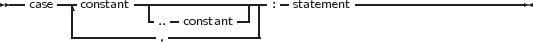

Free Pascal supports the case statement. Its syntax diagram is
_________________________________________________________________________________________________________
Case statement

___________________________________________________________________
The constants appearing in the various case parts must be known at compile-time, and can be of the following types : enumeration types, Ordinal types (including chars) or string types. The case expression must be also of this type, or a compiler error will occur. All case constants must have the same type.
The compiler will evaluate the case expression. If one of the case constants’ value matches the value of the expression, the statement that follows this constant is executed. After that, the program continues after the final end.
If none of the case constants match the expression value, the statement list after the else or otherwise keyword is executed. This can be an empty statement list. If no else part is present, and no case constant matches the expression value, program flow continues after the final end.
The case statements can be compound statements (i.e. a Begin..End block).
Remark: Contrary to Turbo Pascal, duplicate case labels are not allowed in Free Pascal, so the following code will generate an error when compiling:
The compiler will generate a Duplicate case label error when compiling this, because the 3 also appears (implicitly) in the range 1..5. This is similar to Delphi syntax.
The following are valid case statements:
Or
Free Pascal allows the use of strings as case labels, and in that case the case variable must also be a string. When using string types, the case variable and the various labels are compared in a case-sensitive way.
The case with strings is equivalent to a series of if then else statements, no optimizations are performed.
However, ranges are allowed, and are the equivalent of an